図解：メソポタミアの美術
メソポタミア美術の流れ
- 前4000年頃
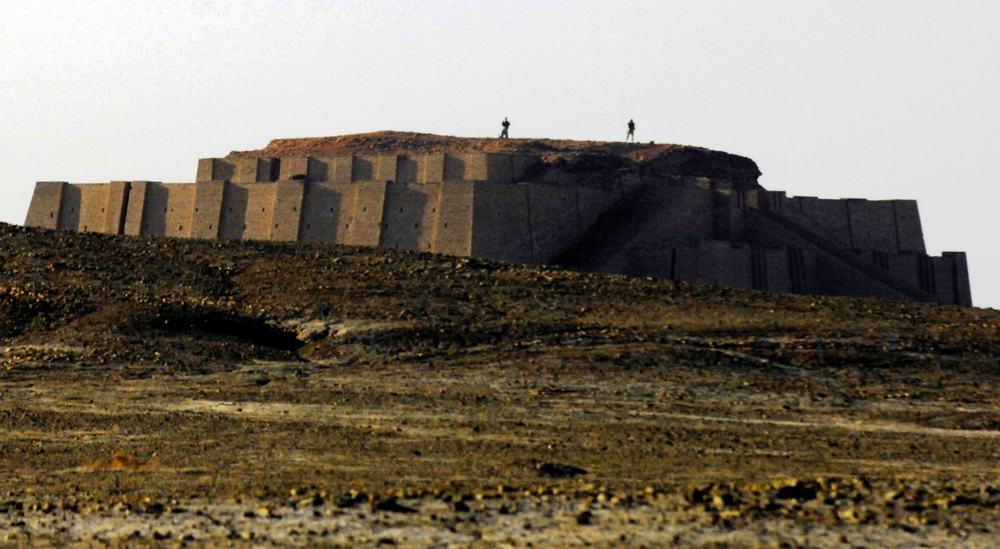
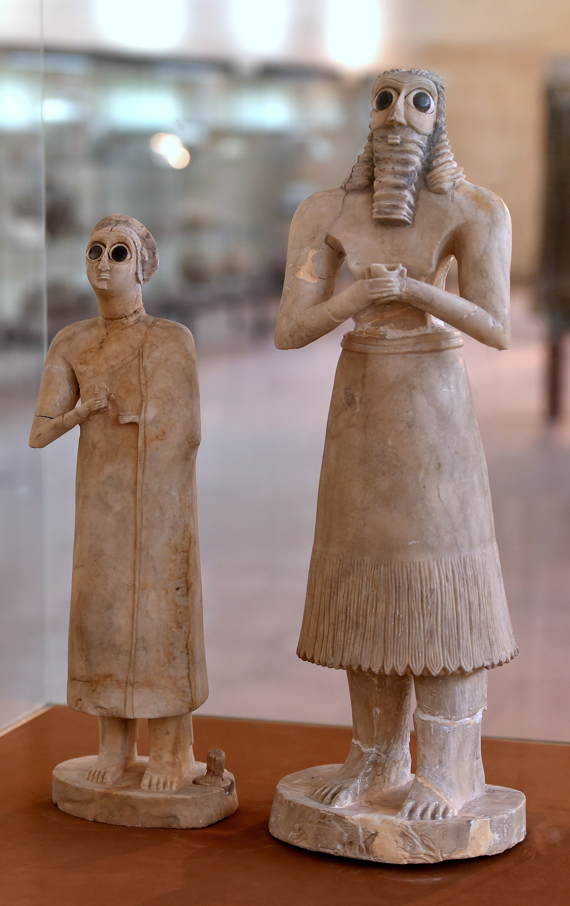
シュメールの都市ジッグラトを建て
礼拝者像を捧げる - 前2300年頃
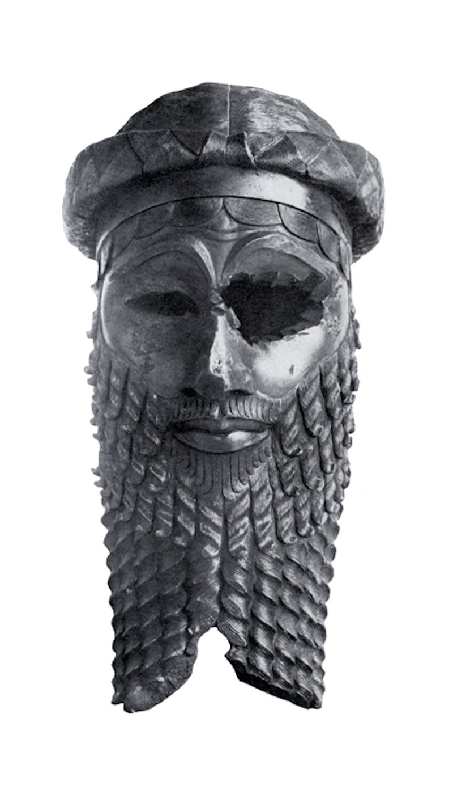
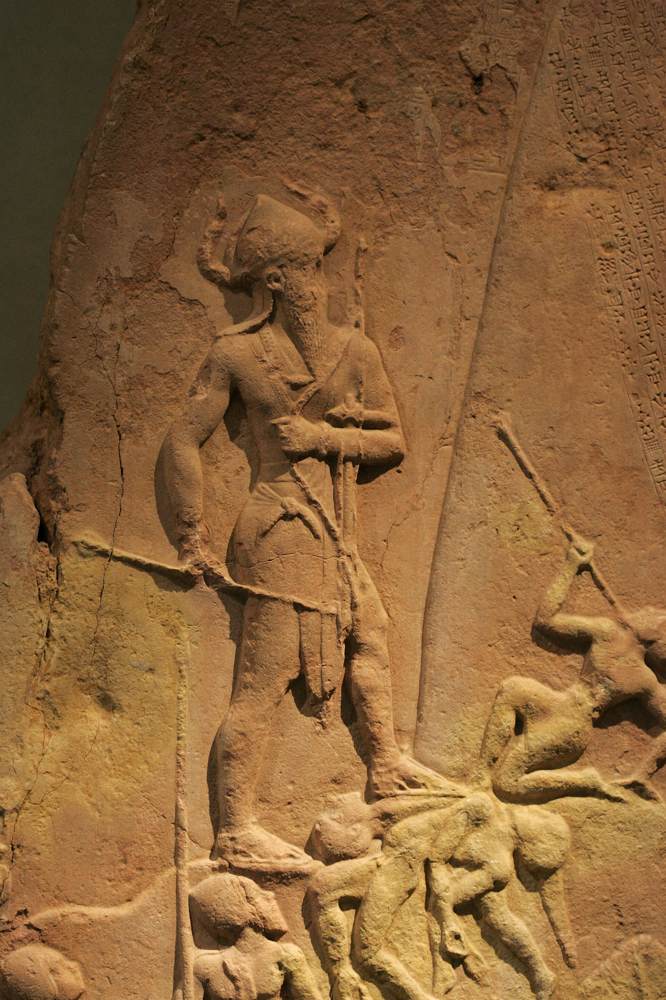
アッカドの支配支配者を賛美する
神中心から人間へ - バビロニア
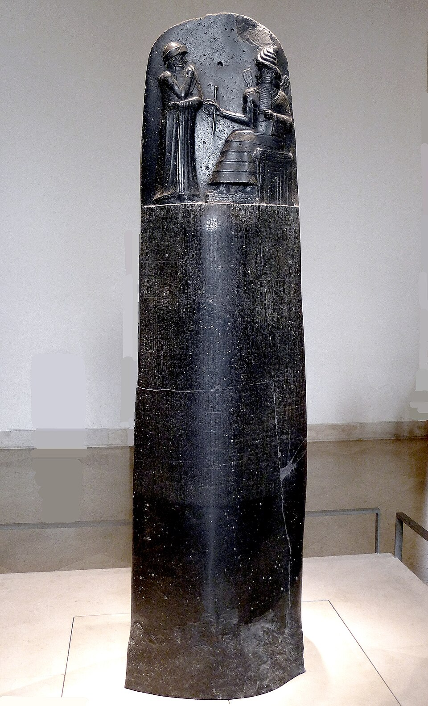
ハンムラビ法典石柱に法律を刻む
王と神の浮彫 - 前700年頃
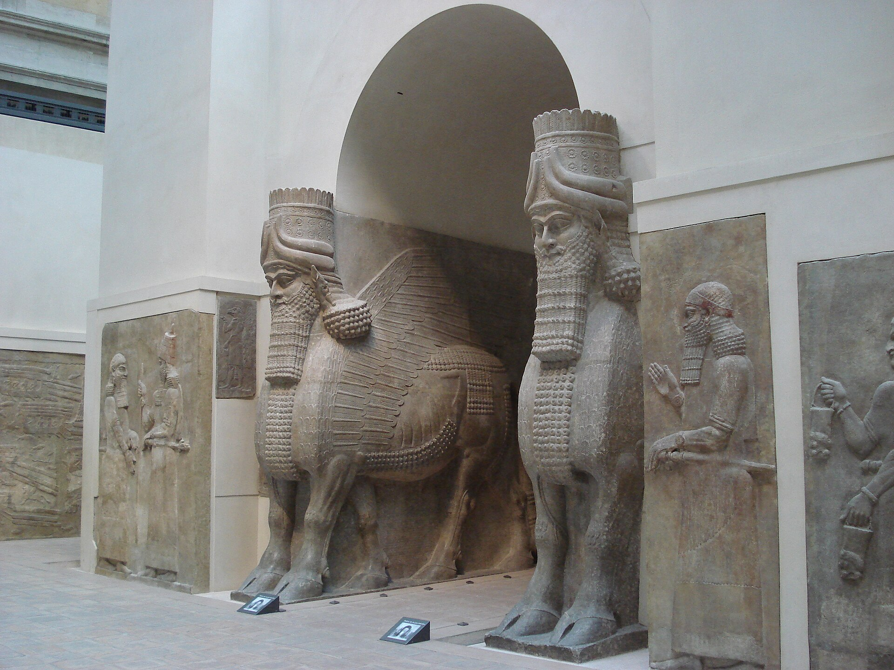
アッシリアの統一守護像で敵を威圧
地中海域へ広める - アケメネス朝
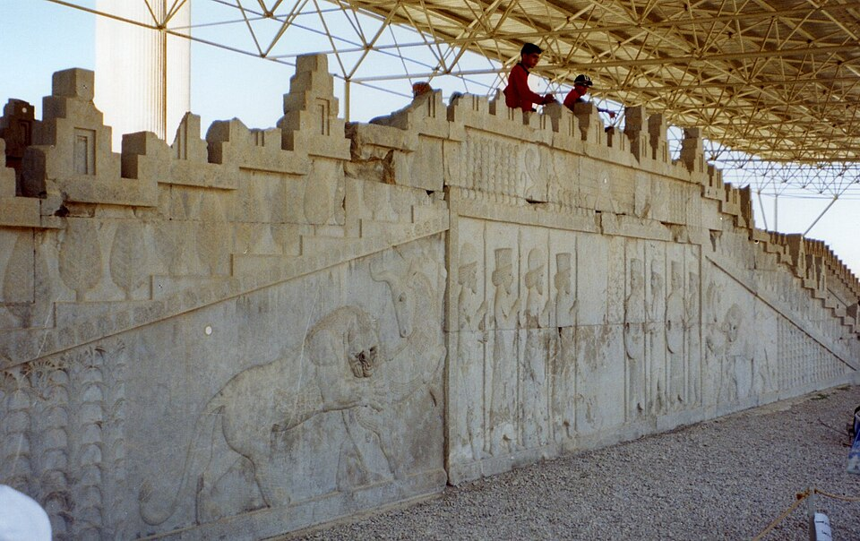
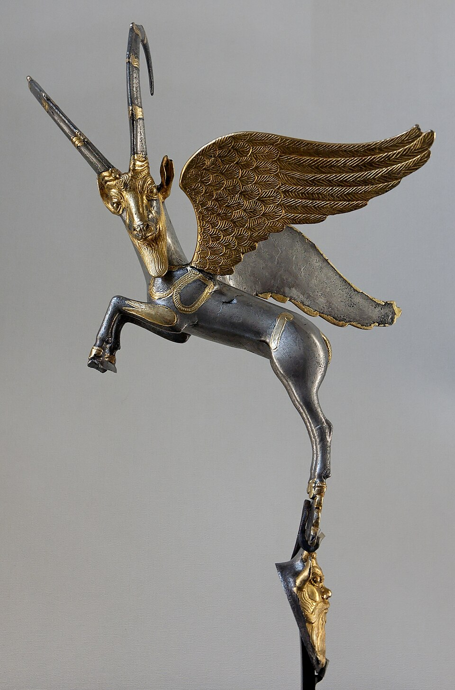
ペルシアの繁栄ペルセポリス
金属工芸の作品
シュメールとアッカドの違い
図版の出典
- 《ウルのジッグラト》建造者不詳（ウル・ナンム王の時代）：出典（Public domain）
- 《礼拝者の像（テル・アスマル出土の男女像）》作者不詳（シュメール）：出典（CC BY-SA 4.0）
- 《サルゴン王頭部像（アッカド王の頭部）》作者不詳（アッカド）：出典（Public domain）
- 《ナラム・シンの勝利碑》作者不詳（アッカド）：出典（CC BY-SA 3.0 fr）
- 《ハンムラビ法典》作者不詳（バビロニア）：出典（CC BY 3.0）
- 《有翼人面牡牛像（コルサバードの宮殿門）》作者不詳（アッシリア）：出典（CC BY-SA 3.0）
- 《ペルセポリス（アパダナの東側階段）》建造者不詳（アケメネス朝の諸王）：出典（Public domain）
- 《翼のあるヤギ（有翼アイベックス形の容器把手）》作者不詳（アケメネス朝）：出典（Public domain）
重要人物
メソポタミアの王
- サルゴンアッカド王王の像として紹介される頭部像が伝わる
- ナラム・シンアッカド王サルゴンの孫。勝利碑で大きく描かれる
- ハンムラビバビロニア王法典の浮彫で太陽神シャマシュと並ぶ
- アッシュルバニパルアッシリア王アッシリア最大の王。世界初の図書館を作る
メソポタミア美術の終わり
文明と美術の誕生
都市・文明と美術の誕生
動画 0:36～太古の昔、人々は狩猟をし、食料を求めて移動する日々を過ごしていた。紀元前4000年頃になると、現在のイランやエジプトの地域で農耕の技術が発達した。安定して食料を得られるようになると、移動の必要がなくなり、多くの集団が集まって都市が形成された。こうして、人類最初の文明が起こった。
文明を意味する英語「civilization」の語源は、都市を意味するラテン語「civitas」である。都市の形成が、文明の誕生につながった。
文明の発達は、美術の発達にも大きく関わっている。共同体を形成するにあたり、人々をまとめる力が必要になった。ある地域では権力者が威厳を示すために、別の地域では神を崇め祀るために、また別の地域では死後の世界を信じてそこへ向かうために、その考えを目に見える形にして大衆に伝えた。それが美術品となった。
現在の美術や芸術には自由な印象があるが、そうした表現が可能になったのは19世紀から20世紀になってからのことである。美術史は、権力者や信仰、人々の生活の歴史としても捉えることができる。メソポタミアの美術は、その始まりに位置する。
中東のイランやイラク、そしてエジプトは、多くの人が西洋として思い浮かべるヨーロッパ圏には当たらない。それでも西洋美術史で扱うのは、これらの地域で生まれた美術が、後のギリシャ美術に影響したためである。例えば、初期のギリシャ美術にはエジプト美術の影響が見られる。西洋美術のルーツを知るためには、これらの地域も学ぶ必要がある。一方、イスラム時代以後のイランは西洋美術への影響が比較的少なく、どちらかといえば東洋美術史に分類される。
シュメールの美術
シュメールの文字とジッグラト
動画 2:31～紀元前4000年頃、シュメール人が文明の基礎を築いたといわれている。シュメール人が支配していた時代のメソポタミアの美術を、シュメール美術と呼ぶ。
シュメール人は、現在知られている最古の文字である楔形文字を使っていた。文字を残したおかげで、彼らの都市がウルやウルクと呼ばれていたことが分かっている。
シュメール人は文字を発明しただけでなく、日干しレンガを使った建築技術にも優れていた。日干しレンガとは、その名の通り、日光で干したレンガである。メソポタミアの土壌は粘土質で、レンガを作るのに適していた。
シュメール人は信仰のため、都市に巨大な聖塔であるジッグラトを建てた。その一つが、ウルクのアヌのジッグラトである。現在は小高い丘のように見えるが、これは日干しレンガが風化しやすく、建設当時の形を残せなかったためである。

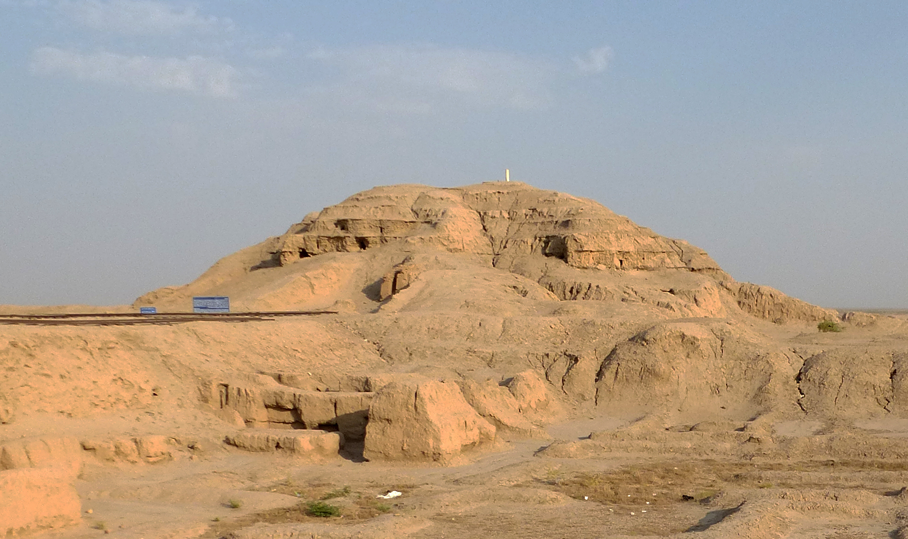
画像を拡大 ＋《アヌのジッグラト（ウルクの白色神殿の基壇）》
- 作者
- 建造者不詳（シュメール）
- 制作時期
- 前4千年紀・ウルク期
- 所在地
- ウルク遺跡、イラク
- 素材・形式
- レンガ造の神殿基壇
出典・画像について
風化した基壇の現状写真。頂上にあった神殿が完全な形で残っているわけではありません。
現存するウルのジッグラトなども、政府による修復のおかげで姿をとどめている。

《ウルのジッグラト》
- 作者
- 建造者不詳（ウル・ナンム王の時代）
- 制作時期
- 前21世紀（原建設）／後世の修復を含む
- 所在地
- ウル遺跡、イラク
- 素材・形式
- レンガ造の神殿基壇
出典・画像について
2007年の遺跡写真。現在見られる姿には修復部分が含まれます。
画像出典：Defense Dept. photo by Cherie A. Thurlby
Public domain
作品情報：Commons：ウルのジッグラト · Commons：原建設の年代記録
エジプトの有名なピラミッドは石で造られているため、風化に耐えて残っている。これに対し、メソポタミアは岩盤に乏しく、同じように石を利用することは難しかった。
神に祈り続ける礼拝者像
動画 3:44～シュメール美術には、建築のほかに礼拝者の像も多く見られる。大きく見開いた目は「魂の窓」と呼ばれ、そこに神が宿るとされた。腹のあたりで手を組む姿は、祈りを表していると解釈される。

《礼拝者の像（テル・アスマル出土の男女像）》
- 作者
- 作者不詳（シュメール）
- 制作時期
- 前2800～2400年頃（初期王朝時代）
- 所蔵
- イラク博物館、バグダード、イラク
- 素材・形式
- 石製彫刻・眼の象嵌
出典・画像について
テル・アスマルのアブー神殿から出土した像群のうち、大きな男女2体。画像では動画と左右の配置が逆です。
これらの像は、ジッグラトに建てられた神殿への礼拝と関わっている。信者は神殿へ祈りに行ったが、いつでも気軽に行けたわけではない。そこで彫像を作り、自分の身代わりとして神に捧げた。像が本人に代わって神に祈るという考え方である。この時代の彫像には、同じような構図やポーズが多く使われている。
ラピスラズリと青色の価値
動画 4:23～シュメールの美術は石像彫刻に限られない。青銅や金、ラピスラズリなどを用いた美術品も多く作られた。表現の幅は広く、王墓には豪華な副葬品が納められた。

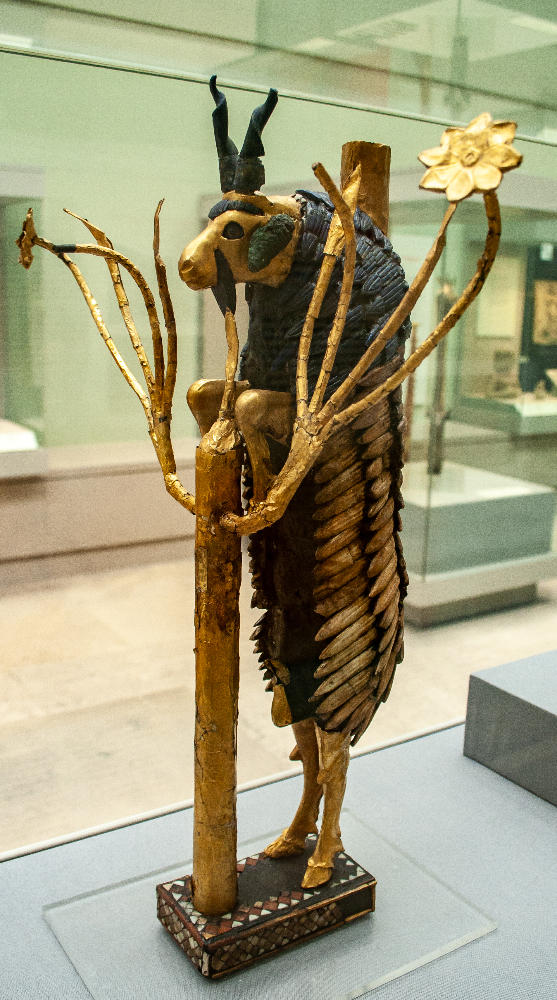
画像を拡大 ＋《聖樹と牡山羊（Ram in a Thicket）》
- 作者
- 作者不詳（シュメール）
- 制作時期
- 前2600年頃
- 所蔵
- 大英博物館、ロンドン、英国（122200）
- 素材・形式
- 金・ラピスラズリ・貝・銀・木など
出典・画像について
ウル王墓出土の一対のうち、大英博物館の個体。頭部や毛並みの青色を後のラピスラズリの説明と対応させてください。
画像出典：写真：Szilas / Wikimedia Commons
CC BY-SA 4.0
作品情報：大英博物館：収蔵品記録
ラピスラズリは群青色の宝石で、和名では瑠璃と呼ばれる。「瑠璃色」という色名にも、その名前が残っている。古代から神聖な石として重宝され、工芸品や芸術品に使われてきた。
用途が多い一方、産地が限られていたため、ラピスラズリは貴重だった。特に古代には、アフガニスタンのバダフシャン地方でしか産出しなかったとされる。原産地のアフガニスタンからメソポタミアまでの道は「ラピスラズリの道」と呼ばれ、遠方からこの石を仕入れていた。
17世紀オランダの巨匠フェルメールは、ラピスラズリをふんだんに使っていた。「フェルメール・ブルー」は彼の代名詞であるとともに、その裕福さを示すものでもあった。

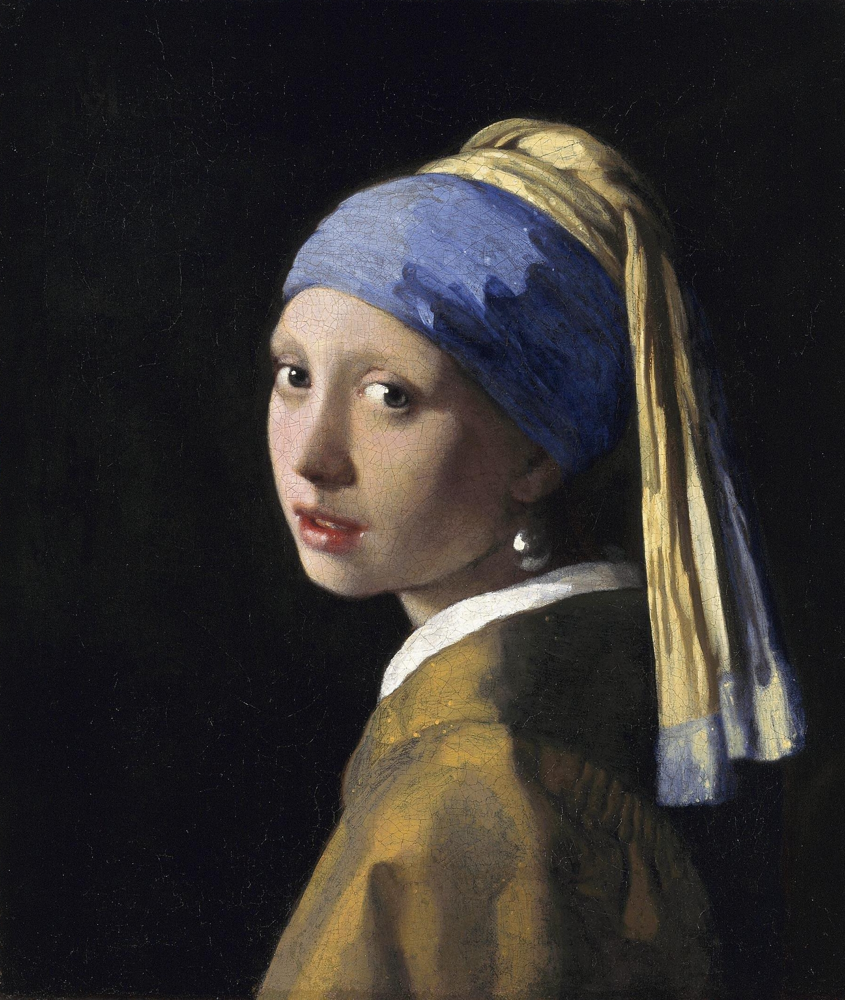
画像を拡大 ＋《真珠の耳飾りの少女》
- 作者
- ヨハネス・フェルメール
- 制作時期
- 1665年頃
- 所蔵
- マウリッツハイス美術館、ハーグ、オランダ（670）
- 素材・形式
- 油彩・カンヴァス
出典・画像について
ラピスラズリの青の説明中に画面に示される補足例。メソポタミア時代の作品ではありません。
画像出典：ヨハネス・フェルメール / Wikimedia Commons
Public domain
作品情報：マウリッツハイス：作品情報

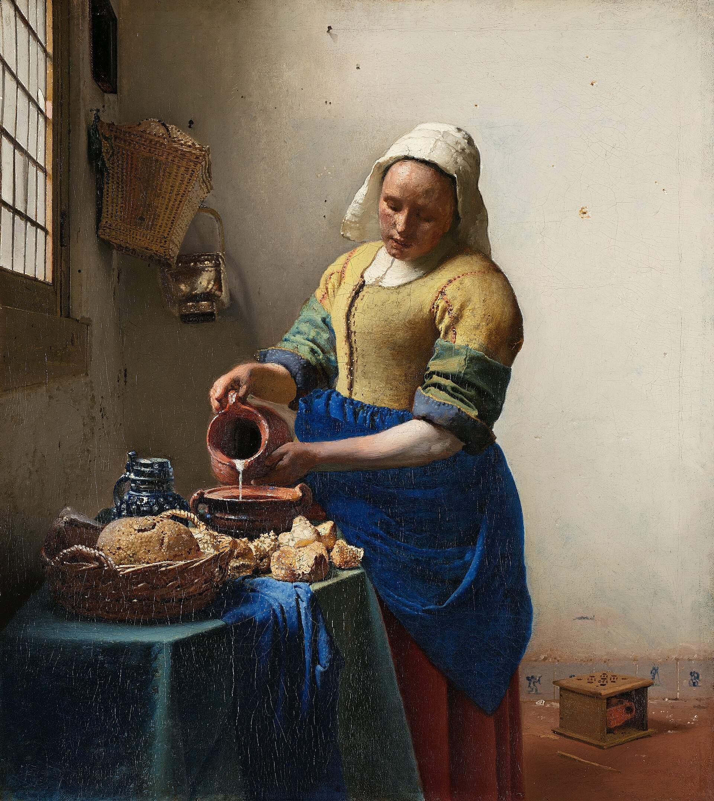
画像を拡大 ＋《牛乳を注ぐ女》
- 作者
- ヨハネス・フェルメール
- 制作時期
- 1660年頃
- 所蔵
- アムステルダム国立美術館、オランダ（SK-A-2344）
- 素材・形式
- 油彩・カンヴァス
出典・画像について
フェルメールの青を説明する画面上のもう1作。作品情報を補足していますが、本文に新しい絵画解説は追加していません。
画像出典：ヨハネス・フェルメール / Google Art Project・Wikimedia Commons
Public domain
作品情報：アムステルダム国立美術館：作品情報
かつては、この青色を出すために大きな費用が必要だった。19世紀に合成ウルトラマリンが作られるようになると、安価にこの青色を出せるようになった。かつての人々がこの色を得るためにかけた費用や苦労に目を向けることは、材料という観点から美術品を見る手がかりになる。
ウルのスタンダードと文明の繁栄
動画 5:35～《聖樹と牡山羊》の青色部分には、ラピスラズリが使われている。
なかでも《ウルのスタンダード》は、シュメール美術の最高傑作といわれる。軍の行進や饗宴の様子が描かれ、当時の文明の繁栄を読み取ることができる。戦車や竪琴も描かれており、当時すでにこれらが存在していたことが分かる。

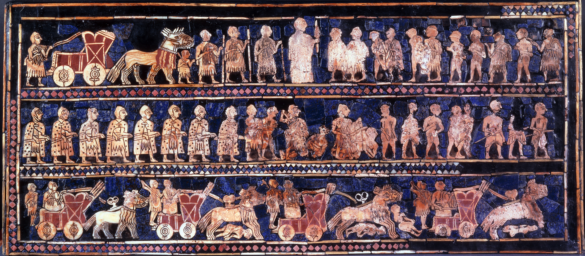
画像を拡大 ＋《ウルのスタンダード〈戦争の面〉》
- 作者
- 作者不詳（シュメール）
- 制作時期
- 前2550～2400年（大英博物館の年代）
- 所蔵
- 大英博物館、ロンドン、英国（121201）
- 素材・形式
- 貝・赤色石灰岩・ラピスラズリの象嵌、瀝青
出典・画像について

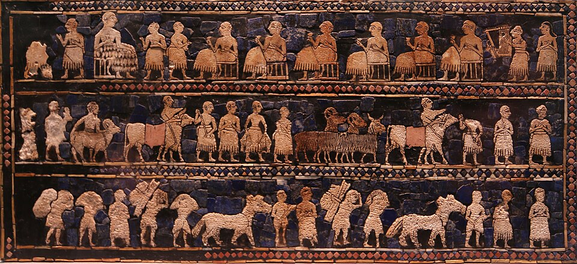
画像を拡大 ＋《ウルのスタンダード〈平和の面〉》
- 作者
- 作者不詳（シュメール）
- 制作時期
- 前2550～2400年（大英博物館の年代）
- 所蔵
- 大英博物館、ロンドン、英国（121201）
- 素材・形式
- 貝・赤色石灰岩・ラピスラズリの象嵌、瀝青
出典・画像について
上段の饗宴と右端の竪琴奏者を確認できます。1作品の2面を比較表示しており、作品数には1件として数えています。
画像出典：写真：geni／補正：LeastCommonAncestor / Wikimedia Commons
CC BY-SA 3.0
作品情報：大英博物館：ウルのスタンダード
制作メモ
取得元で遠近補正・切り抜きされた画像。
こちらで追加加工はしていません。
アッカドからアッシリアへ
アッカド：支配者を賛美する美術
動画 5:57～シュメール文化は長く栄えたが、紀元前2300年頃にはアッカド人へ支配権が移った。アッカド人がメソポタミアを支配していた時代の美術を、アッカド美術と呼ぶ。
アッカド美術の特徴は、支配者を賛美する作品が現れたことである。その例が、アッカド王国の国王サルゴンの像として紹介される《サルゴン王頭部像》である。礼拝者像と比べると、目の表現が写実的になっている。神を中心とした美術から、人間、とりわけ支配者を中心とした美術に変わったためと考えられる。

《サルゴン王頭部像（アッカド王の頭部）》
- 作者
- 作者不詳（アッカド）
- 制作時期
- 前3千年紀後半・アッカド時代
- 所蔵
- イラク博物館、バグダード、イラク
- 素材・形式
- 青銅
出典・画像について
ニネヴェ出土。『サルゴン王』という同定は確定しておらず、ナラム・シンなどの可能性もあるため、作品名と人物の確定を区別しています。掲載画像は古い白黒写真です。
サルゴンの孫、ナラム・シンの時代には、勝利を記念する石碑も作られた。ルルビ族への勝利を祝ったもので、世界最古の記念碑とされる。中央付近で特に大きく描かれている人物がナラム・シンであり、その大きさによって王の優位性が示されている。

《ナラム・シンの勝利碑》
- 作者
- 作者不詳（アッカド）
- 制作時期
- 前2254～2218年（ナラム・シンの時代）
- 所蔵
- ルーヴル美術館、パリ、フランス（SB 4）
- 素材・形式
- 石灰岩・浮彫
出典・画像について
浮彫部分の詳細写真。大きく表された王と、その下に配置された人物の大きさを比較できます。石碑外形全体の写真ではありません。
画像出典：Rama
CC BY-SA 3.0 fr
作品情報：ルーヴル：勝利碑の収蔵品記録
バビロニアとハンムラビ法典
動画 6:40～しかし、ナラム・シンの死後、アッカド王国は急速に衰えていった。長い混乱の時代を経て、次にメソポタミアを統一したのがバビロニアである。
バビロニア時代の作品のなかでも、特に有名なのが《ハンムラビ法典》である。「目には目を、歯には歯を」で知られ、旧約聖書にも採用された条文が載っている。この法典は、世界最古の法律とされる《ウル・ナンム法典》などを継承して作られた。
法律は、石柱に楔形文字で刻まれている。上部の浮彫は、王が法律の完成を神に報告する姿を表すとされる。左がハンムラビ王で、右が太陽神シャマシュである。

《ハンムラビ法典》
- 作者
- 作者不詳（バビロニア）
- 制作時期
- 前1792～1750年（ハンムラビ王の時代）
- 所蔵
- ルーヴル美術館、パリ、フランス（SB 8）
- 素材・形式
- 玄武岩・浮彫・楔形文字の刻文
出典・画像について
この構図では、神が王よりも上の立場にある。バビロニア時代に限らず、権力者は神の代理人という立場で人々の上に立つことが多いと考えられる。
アッシリアの守護像と文化の広がり
動画 7:24～一時繁栄したバビロニア王朝も、その後アッシリアに支配権を奪われた。この時代の美術を、アッシリア美術と呼ぶ。メソポタミアは基本的に平地であり、交易がしやすい反面、侵略も受けやすかった。そのため、繁栄から短期間で滅亡へと向かうことが多く、支配者が人々をまとめる苦労も大きかったと考えられる。
アッシリア美術で特徴的なのはレリーフであり、独特な世界観を表す作品がいくつも残っている。なかでも有名なのが、有翼人面牡牛像である。この空想上の生物は守り神として信じられ、その巨大さと奇妙な姿によって、攻めてくる敵を威圧したという。

《有翼人面牡牛像（コルサバードの宮殿門）》
- 作者
- 作者不詳（アッシリア）
- 制作時期
- 前721～705年（サルゴン2世の時代）
- 所蔵
- ルーヴル美術館、パリ、フランス（AO 19857・AO 19858）
- 素材・形式
- 石膏質アラバスター・高浮彫と丸彫り
出典・画像について
コルサバードの宮殿門を再構成した展示。動画にも見られる正面の対の像で、別の都市の守護像ではありません。
画像出典：Vania Teofilo
CC BY-SA 3.0
作品情報：ルーヴル：有翼牡牛像の解説資料 · Commons：撮影された収蔵番号
アッシリアは軍事力にも優れ、紀元前700年頃にはオリエント世界を統一した。帝国拡大の過程で、メソポタミア美術を地中海域まで広めた功績もある。影響の程度は不明であるものの、ギリシャ美術にも影響を与え、メソポタミアと西洋美術がつながっていく。
アッシリア最大の王、アッシュルバニパルは、世界で初めて図書館を作ったことで知られる。《ギルガメシュ叙事詩》も、この図書館があったおかげで現代まで残った。
新バビロニアとペルシア
新バビロニアと青いイシュタル門
動画 8:43～その後、バビロニアが支配権を奪還し、新バビロニア美術が発展した。首都バビロンにあったジッグラトは、旧約聖書で有名なバベルの塔のモデルになっている。
古代建築の確実な画像は未採用
《バビロンのジッグラト（バベルの塔のモデル）》
- 作者
- 建造者不詳
- 制作時期
- 古代バビロン／新バビロニア時代などに再建
- 所在地
- バビロン遺跡、イラク
- 素材・形式
- レンガ造の神殿基壇
出典・画像について
動画画面では後世のブリューゲルの絵画が示されています。絵画を古代建築の外観資料として扱わず、下に別作品として掲載します。特定の復元案は採用していません。
作品情報：UNESCO：バビロン遺跡

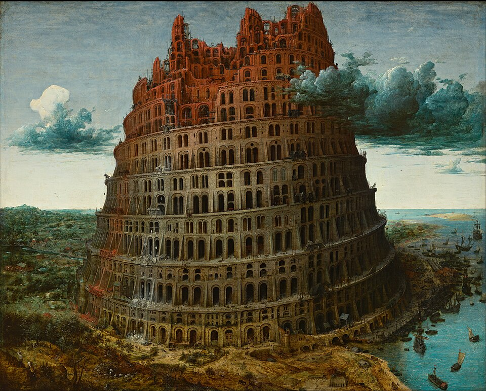
画像を拡大 ＋《バベルの塔（ロッテルダムの小塔）》
- 作者
- ピーテル・ブリューゲル（父）
- 制作時期
- 1568年頃（所蔵館の現在の作品記録）
- 所蔵
- ボイマンス・ヴァン・ベーニンゲン美術館、ロッテルダム、オランダ（2443）
- 素材・形式
- 油彩・板
出典・画像について
動画がバベルの塔の説明に用いた後世の絵画。古代メソポタミアの建築を忠実に復元した図ではありません。ウィーンの『大塔』とは別作品です。
画像出典：ピーテル・ブリューゲル（父） / Google Art Project・Wikimedia Commons
Public domain
作品情報：ボイマンス：作品情報
新バビロニア時代には、イシュタル門も造られた。動画では、門の青色にもラピスラズリが使われ、かなりの費用がかかったと説明されている。

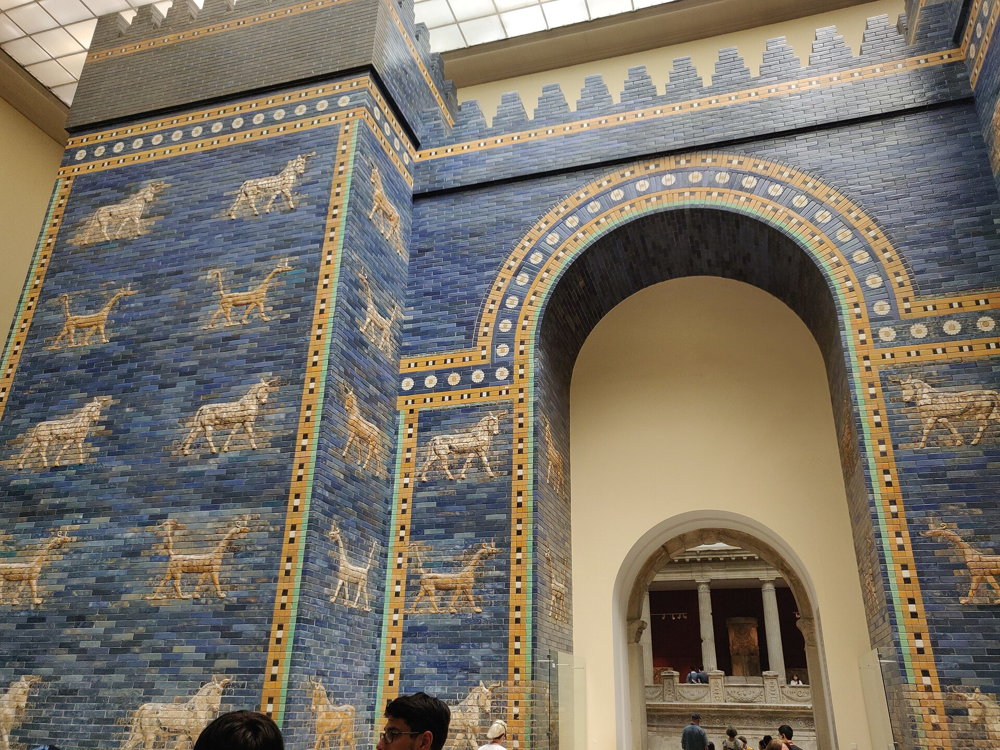
画像を拡大 ＋《イシュタル門（復元展示）》
- 作者
- 建造者不詳（新バビロニア）
- 制作時期
- 前6世紀（原建造）／1930年公開の復元展示
- 所蔵・復元展示
- ペルガモン博物館・古代オリエント博物館、ベルリン、ドイツ
- 素材・形式
- 施釉レンガ・動物の浮彫
出典・画像について
バビロンから出土した施釉レンガ断片に現代のレンガを補った復元展示。青色の素材については本文直後の補注を参照してください。
画像出典：Kurt Kaiser
CC0
作品情報：ベルリン国立博物館：断片から復元展示へ
素材の補注：イシュタル門の青色
本文のラピスラズリという説明は動画由来です。ベルリン国立博物館は、門を施釉レンガの断片から復元したものと説明しています。門の青い部分をラピスラズリの石そのものとして理解しないよう、素材情報を区別します。展示には現代のレンガによる補完も含まれます。
アケメネス朝ペルシアの繁栄
動画 9:02～新バビロニアの繁栄も長くは続かず、その後はアケメネス朝ペルシアに支配された。この時代の美術を、アケメネス朝ペルシア美術と呼ぶ。
アケメネス朝ペルシアはペルシア帝国とも呼ばれ、後にギリシャとペルシア戦争を起こした。この戦争は、美術史上でも重要な出来事である。
アケメネス朝ペルシアの代表的な建築物に、ペルセポリスがある。12万平方メートルにも及ぶ基盤の広さは、アケメネス朝の繁栄を表している。

《ペルセポリス（アパダナの東側階段）》
- 作者
- 建造者不詳（アケメネス朝の諸王）
- 制作時期
- 前518年頃から建設された宮殿群
- 所在地
- ファールス州、イラン
- 素材・形式
- 石造の宮殿群・階段と浮彫
出典・画像について
宮殿群のうち、アパダナの東側階段を撮影。動画の宮殿群の写真とは撮影箇所が異なります。遺跡群の原建設年代と、掲載する個別の階段を区別しています。
画像出典：写真：Pentocelo / Wikimedia Commons
Public domain
作品情報：UNESCO：ペルセポリス · Commons：アパダナ東側階段
金属工芸の作品も作られており、《翼のあるヤギ》がその例である。各時代には、それぞれ独自の美術が展開されていた。

《翼のあるヤギ（有翼アイベックス形の容器把手）》
- 作者
- 作者不詳（アケメネス朝）
- 制作時期
- 前539～330年（所蔵館の文化期表記）
- 所蔵
- ルーヴル美術館、パリ、フランス（AO 2748）
- 素材・形式
- 銀・鍍金
出典・画像について
画面では『紀元前4世紀頃』と紹介。所蔵館の記録ではアケメネス朝期とされています。脚下の把手部分まで写った同一作品の写真です。
画像出典：写真：Jastrow / Wikimedia Commons
Public domain
作品情報：ルーヴル：容器把手の収蔵品記録
支配者の交代とその後の展開
動画 9:37～シュメールからアケメネス朝ペルシアまでの美術を総称して、メソポタミア美術と呼ぶ。支配者が次々に入れ替わるため、時代の流れを押さえることが大切である。
その後、アケメネス朝ペルシアはアレクサンダー大王の征服によって崩壊した。メソポタミアはヘレニズム国家による支配などを受け、最終的にはイスラム化が進んだ。以後、西洋美術史の中ではあまり取り上げられなくなる。
要点まとめ
- 紀元前4000年頃、農耕の発達で都市が形成され、人類最初の文明が起こった。美術は権力者の威厳、神への信仰、死後の世界といった考えを目に見える形にして伝えるものとして生まれた。メソポタミアの美術は後のギリシャ美術に影響したため、西洋美術史で扱われる。
- シュメール人は最古の文字とされる楔形文字を使い、日干しレンガで聖塔ジッグラトを建てた（ウルクのアヌのジッグラト、ウルのジッグラト）。
- シュメールの礼拝者像は、大きく見開いた目（「魂の窓」）と手を組む姿で、本人の身代わりとして神に祈った。
- 群青色の宝石ラピスラズリは、古代にはアフガニスタンのバダフシャン地方でしか産出せず、「ラピスラズリの道」で運ばれた。シュメール美術の最高傑作《ウルのスタンダード》には、軍の行進や饗宴が描かれている。
- 紀元前2300年頃からのアッカド美術では、支配者を賛美する作品が現れた（《サルゴン王頭部像》、ナラム・シンの戦勝記念碑）。
- バビロニアの《ハンムラビ法典》は「目には目を、歯には歯を」で知られ、石柱に楔形文字で刻まれている。上部には王が太陽神シャマシュに報告する姿が浮彫で表されている。
- アッシリア美術はレリーフが特徴で、守り神の有翼人面牡牛像が知られる。紀元前700年頃にオリエント世界を統一し、アッシュルバニパルは世界初の図書館を作った。
- 新バビロニアの首都バビロンのジッグラトはバベルの塔のモデルとされ、イシュタル門が造られた。続くアケメネス朝ペルシアではペルセポリスが建てられ、後にギリシャとペルシア戦争を起こした。
- シュメールからアケメネス朝ペルシアまでの美術を総称してメソポタミア美術と呼ぶ。アレクサンダー大王の征服で崩壊した後、メソポタミアは西洋美術史ではあまり扱われなくなる。
確認問題
答えを考えてから開いてください。選択問題は選ぶとすぐ正誤と解説が出ます（選択肢の順番は開くたびに変わります）。各問題のリンクから該当の章や作品カードへ戻れます。
選択問題：0／5問回答・正解0
A. 一問一答答えを考えてから開く
問1シュメール人が使っていた、現在知られている最古の文字は何か。
答えを見る
問2シュメール人が信仰のため、日干しレンガで都市に建てた巨大な聖塔を何と呼ぶか。
答えを見る
問3シュメールの礼拝者像に見られる、神が宿るとされた大きく見開いた目を何と呼ぶか。
答えを見る
B. 4択選ぶとすぐ正誤と解説
問4古代にラピスラズリを産出したとされる地域はどこか。
→ 本文で確認（ラピスラズリと青色の価値）
問5巨大さと奇妙な姿で敵を威圧したとされる、アッシリア美術の守り神の像はどれか。
→ 本文で確認（アッシリアの守護像と文化の広がり）
問6紀元前2300年頃にシュメールから支配権を得て、支配者を賛美する美術を生んだのはどの人々か。
→ 本文で確認（アッカド：支配者を賛美する美術）
C. 図版問題画像を見て答える
問7シュメール美術の最高傑作といわれるこの作品の名前を答えよ。
答えを見る
問8「目には目を、歯には歯を」で知られる条文を刻んだこの石柱はどれか。
→ 作品カードで確認
問9新バビロニア時代に造られたこの門の名前はどれか。
→ 作品カードで確認